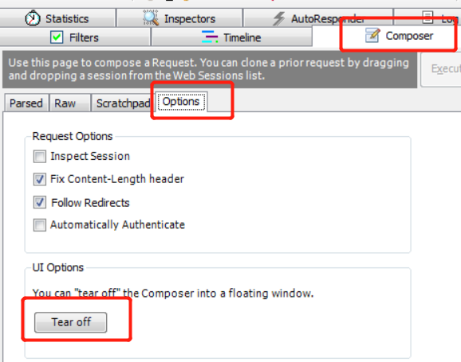
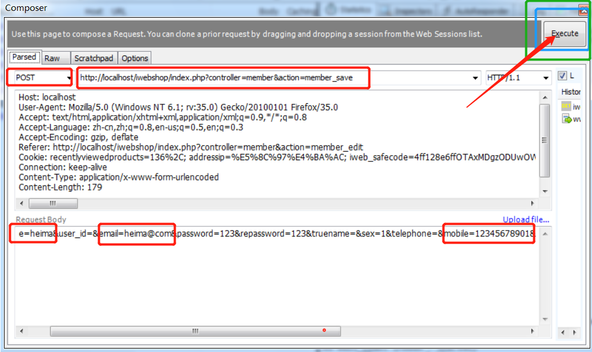

接口测试-fiddler工具
Fiddler的安装
基于Miscrosoft .Net Framework软件，必选先安装，一路下一步即可
NDP452-KB2901907-x86-x64-AllOS-ENU.exe

Fiddler安装一路下一步即可
Fiddler_4.6.0.2.exe

Fiddler的基本使用
抓取请求和响应数据
Browser ---> 选择要抓取的浏览器（IE、Firefox、Chrome） 如果有一个浏览器抓不到数据，就换另一个 选择Remove all 或者在下方黑框（命令行）输入cls可清理数据

设置过滤
Filters菜单--->勾选Use Filters 在第二个下拉框中选择Show only the following Hosts--->只显示以下地址的请求和响应数据 Actions--->Run Filterset Now立即执行

查看请求和响应数据
判断GET请求和POST请求

选中请求，右侧Inspectors

请求
在Headers和Raw中可以查看请求行和请求头部信息
在Textview或者WebForms中查看请求实体数据
响应
在下面的Headers/Raw中查看响应行和响应头部信息
在下面的Textview中查看响应实体部分数据
fiddler的应用---修改接口请求数据
原理：越过界面验证，测试服务器端
举例：会员添加功能中手机号的正确性验证
步骤
1. 在Fiddler中做过滤 选择 Fiddler 菜单中 Rules--->Automatic Breakpoints--->Before Requests，设置断点 也可以使用快捷键 F11；

2. 点击【会员添加】按钮---->并填写相应参数
3. 点击【确定】按钮
4. 选中拦截的请求（红色的T）
5. 选择Inspectors--->找到请求要发送的数据--->对其进行修改

6. 重新发送接口请求：Run to Completion
7. 关闭断点：Disabled

过程的理解
- 拦包
- 修改数据
- 发包
练习
会员添加中的邮箱格式的正确性验证

Composer的应用---模拟接口
可以通过Composer模拟发送接口请求和数据，不用特意先拦截下来再去修改数据
1. 点击右侧Composer--->Options--->Trea off 让它单独显示；

2. 点击Parsed，可以手动输入，也可把我们抓到的包拖动到Composer中，进行相应的修改；
3. 点击【Execute】发送请求。

硬件接口
打印机、投影仪